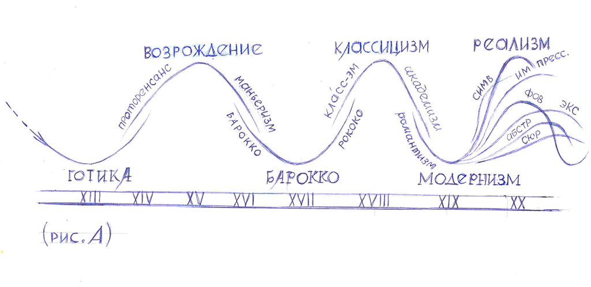

- NIHIL SEMPER MANET SUO STATU
- Ничто не остаётся всегда в том же состоянии
- (Латинское изречение)
- Ничто не остаётся всегда в том же состоянии
Синусоида стилей.

На (рис. А) наглядно представлена схема исторического процесса смены стилей в живописи (и других жанрах искусств) по мере движения времени от античности до начала ХХ века.
Закономерность изменения стилей напоминает синусоиду, построенную на нейтральной оси Т.На вершинах этой кривой линии, расположенных выше оси, помещаются названия классических стилей – античность, возрождение, классицизм, реализм ХIX в. Ниже осевой линии располагаются названия романтических стилей – готика, барокко, романтизм.
На пересечениях синусоиды с осью времени размещаются стилевые направления, переходные между двумя соседними. Например, проторенессанс – между готикой и Возрождением, маньеризм – между Возрождением и барокко, рококо – между барокко и классицизмом.
Приведенная здесь схема далеко не исчерпывает всех стилевых оттенков и нюансов, различаемых в искусстве разных стран и периодов времени. Это не входит в задачи данной работы. Цель этой схемы – помочь читателю охватить единым взглядом процесс развития живописи, чтобы это искусство не представлялось конгломератом необозримого множества различных картин.
Эта схема призвана также помочь читателю ориентироваться в проблемах содержания произведения искусства: о чём оно повествует, какие мысли нам внушает, какие идеи пропагандирует, в чём видит добро или зло. В « классических» стилях, при всём их несходстве, названные проблемы решаются почти аналогично. То же можно сказать и о «романтических» стилях (конечно, с оговорками).
Совершим небольшой экскурс в историю стилей.
В современной науке об искусстве не существует единого взгляда на природу тех сил, которые побуждают искусство изменять свои формы и содержание по мере движения времени (проще говоря, на причины смены стилей и направлений). В русском искусствознании ХХ в. эту причину видели в изменениях материального базиса и государственного строя. Искусство же относили к категории надстройки, целиком зависящей от политических и экономических факторов.
Эта теория в какой-то мере справедлива, но не на все сто процентов. Даже беглый взгляд на живопись (а также литературу, музыку и пр.) многонационального искусства России и Беларуси убеждает нас, что формы, краски, сюжеты и самый дух искусства в лучших его образцах говорят о вневременных и внеполитических ценностях жизни. Они говорят не о политике и производстве, а о Человеке, о проблемах его бытия, о духе и душе.
Да, материальный базис и производственные отношения в обществе влияют на формы и содержание искусства, но опосредованно – через духовную сферу. Они формируют душу человека, влияют на его мировоззрение, создают систему морально-этических ценностей. В результате сознание художника (и подсознание) функционирует подобно зеркалу, отображающему мир. Оно обладает индивидуальными особенностями – поэтому разные художники рисуют одну и ту же «постановку» или пейзаж по-разному, иногда совсем непохоже.
Чтобы понять причины изменения стилей в искусстве, нужно вникнуть в «коллективную психологию» общества. В этом исследователю может оказать неоценимую помощь художественная литература того или иного времени, а также музыка и архитектура. Начнём наш обзор стилей с позднего средневековья.
Готика (ХIII в.)
В христианской Европе преобладающим жанром живописи была иконопись – монументальные росписи или станковые иконы. Они внушали человеку благочестивые мысли и высокие чувства – те, о которых возвещено Создателем в Священном Писании Ветхого и Нового Завета.
Кто мы есть? – «Мы – Его творение, созданы во Христе Иисусе на добрые дела, которые Бог предназначил нам исполнять. (Еф. 2:10)
Каков основной закон жизни? – «Ибо весь закон в одном слове заключается: люби ближнего, как самого себя» (Еф. 5:14)
Что есть Бог? – «…Бог есть любовь» (1 Иоан 4:8)
Что есть знание? - «Знание надмевает, а любовь назидает» (1 Кор. 8:1)
«Кто думает, что он знает что-нибудь, тот ничего ещё не знает так, как дoлжно знать. Но кто любит Бога, тому дано знание от Него» (1 Кор. 8:2,3)
Как относиться к ближнему? – «Носите бремена друг друга, и таким образом исполните закон Христов» (Гал. 6:2) «Делая добро, да не унываем; ибо в своё время пожнём, если не ослабеем» (Галл. 6:9).
Каковы дела плоти? – «Дела плоти известны: они суть: прелюбодеяния, блуд, нечистота, непотребство, идолослужение, волшебство, вражда, ссоры, зависть, гнев, распри, разногласия, соблазны, ереси. Ненависть, убийство, пьянство, бесчинство и тому подобное. Поступающие так царства Божия не наследуют.» (Галл. 5:19, 20,21) «Но те, которые Христовы, распяли плоть со страстями и похотями» (Гал. 5:24).
Что есть плод духа? - «Плод же духа: любовь, радость, мир, долготерпение, благость, милосердие, вера, кротость,воздержание. На таковых нет закона» (Гал. 5:22, 23)
Человек, соблюдающий заповеди пророков и апостолов, достоин входить в общество христиан и пользоваться заслуженной им долей уважения. Заметим в скобках, что параллельно с культурой христианства существовала и другая – так называемая «народная культура», по существу отвергающая официальную и пародирующая её. (Франсуа Рабле, М.Бахтин, Византийский сатирический диалог). Впрочем, в недрах «большой» культуры всегда существовала «контркультура». Так было с начала цивилизации и до наших дней.
Средневековые художники, воспитанные в духе Священного писания, изображали на иконах не портреты людей, а образы Бога и святых. В представлении художника-богописца они были похожи на земных людей идеального типа, т.е. на истых христиан, праведных, богобоязненных и безгрешных. Иконы положено было писать по установленным и утверждённым церковными властями подлинникам, но практически всякий иконописец вносил в черты своих произведений некоторое сходство с известным ему типом лица реальных людей-современников и соотечественников. Однако подменить иконописный лик копией лица живого человека было бы кощунством, наказуемым сожжением на костре. Икона – это в принципе не портрет, а портрет – не икона. Коренное различие между ними в том, что лицо на иконе – это лик святого, а лицо на портрете – это копия внешности человека из плоти и крови, грешного и смертного.
И когда феодальный уклад понемногу сменяется буржуазным, а готика уступает место проторенессансу – изменяются отношения между людьми, их взгляды на религию и мораль. Интересным источником информации может служить, например, трактат знатной дамы Дуоды, графини Септиманской (841 – 843 гг.) – «Поучение сыну Вильгельму». Она, заботливая мать, желает подготовить сына к карьере царедворца и поделиться с ним житейской мудростью. К списку добродетелей, перечисленных апостолом Павлом, она добавляет те, которые необходимы для жизни в современном сыну обществе: изобретательность, хитрость, находчивость, бдительность и заботливость, рассудительность и трезвость. Иными словами, судьба человека (и его души после смерти) не предопределена предвечно, - она зависит также и от земных деяний самого человека. [ Л. 34, с. 92]
По мере течения времени и нарастания элементов капитализма в жизни европейских стран названные здесь «добродетели» дополнялись другими и всё более укоренялись в умах людей. В Италии ХIII – XIV вв. искусство уже отреагировало на прогресс в главных областях жизни – сформировался стиль «Проторенессанс». Изображать человека «с натуры» уже не было кощунством. Более того – он, достигший мирской власти и могущества, пожелал быть увековеченным в барельефах на медалях, в живописных портретах и картинах. Портреты стали претендовать на роль икон – им, как образам предков, поклонялись, берегли память о них. Портреты были своеобразными документами, удостоверяющими знатное происхождение потомков и предков. Самой ранней формой ренессансного портрета были профильные изображения (как предполагается, в подражание медалям). По мере укрепления позиций этого стиля человеческая сущность портретируемых выявляется полнее – они изображаются в трёхчетвертном ракурсе, а затем, уже с начала ХV в. – анфас. Мы видим их лицо, они смотрят нам в глаза, а мы – им. Это не только сеньоры или высшие церковные чины. Это также владельцы мануфактур, торговцы, мореплаватели, военные, Это люди экономически независимые, добывающие средства к существованию «бизнесом», или трудом по найму.
Человек почувствовал себя хозяином своей судьбы и творцом своего счастья. Отношение его к религии существенно пошатнулось: он понял (точнее, вообразил), что может прожить без Бога. Убедиться в этом ему помогали учёные и философы Кватроченто, приступившие к объяснению законов мироздания, в котором понятие Божества оказалось излишним (И.Кеплер, Д.Бруно, Г.Галилей, Н Коперник, Леонардо да Винчи…)
Кодекс моральных правил человека Возрождения существенно изменился в сравнении с заповедями Средневековья (и приблизился к античности).
Вместо познания Бога ему рекомендовали: «Делай своё дело и познай самого себя». [ Л. 35, с. 69].
Мысли о божественном, молитвы и прочие богоугодные дела – это «чужие» дела. Разберись лучше в самом себе. «Кто достаточно знает себя, тот не почитает чужого дела своим; тот больше всего любит себя и печётся о своём благе, тот отказывается от бесполезных занятий, бесплодных мыслей и неразрешимых задач» [ с. 69 ].
Человек должен доверять своему разуму, а не искать ответов на вопросы где-либо вовне. «Принимай вещи такими, какими они представляются тебе… всё остальное выше твоих познаний» [c. 66].
Человек Возрождения – индивидуалист. «И ничего я так не хотел бы, чтобы о каждом из нас судили особо и чтобы меня не стригли под общую гребёнку» [ c. 73 ].
Человек эпохи Возрождения позволяет себе любой образ действий (в том числа греховный) – ведь он не верит в загробную жизнь и воздаяние за грехи. «Если по ту сторону (земной жизни) – абсолютная неизвестность, которую мы лишь додумываем – что с того? Ведь «эта сторона» не теряет от этого ни своего значения, ни своей значимости. А то, что нет критериев истинности и в ней – не значит, что нет нас!» [ c. 68 ].
Согласно свидетельству М. Монтеня, человек не знает и не может знать, в чём заключается для него высшее благо. Он не верит в «чистую» добродетель и не способен к добродетельным поступкам без каких-либо корыстных (или прочих) посторонних побуждений. Он (человек) решительно осуждает свой век и все его особенности: «Век, в который мы с вами живём, по крайней мере, под нашими небесами – настолько свинцовый, что не только сама добродетель, но даже понятие о ней – вещь неведомая; похоже, что она стала лишь словечком из школьных упражнений в риторике:- Для них добродетель – лишь слово, а священная роща – дрова [ Л. 35, с. 74].
Выше мы уже познакомились с идеологическими предпосылками культуры, следующей хронологически за средневековой. Её назвали «Возрождение», или «Ренессанс», и так же именуется эпоха, породившая эту культуру, и стиль в искусстве.
Л. Миронова,
15.10.2016